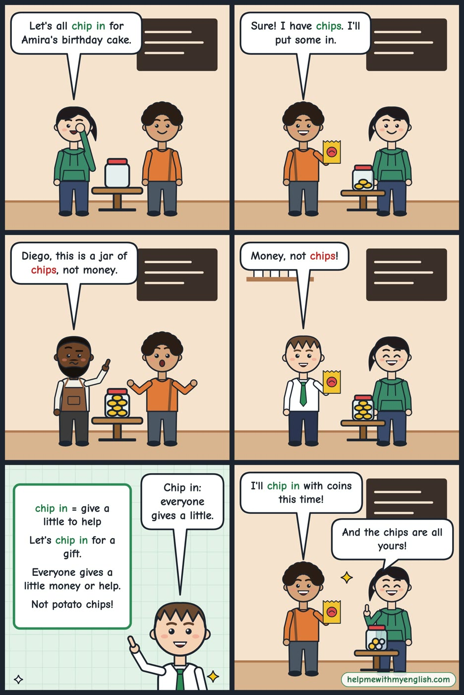

chip in
To give a small amount of money or help together with others.
Let's all chip in for Amira's birthday cake.
Tip: Use 'chip in' with 'for' + the thing, or 'to' + a verb, and add 'with' if you name the money or help: 'chip in for a gift', 'chip in to fix it'. Don't use it for one person paying a whole bill alone.
Hear it in conversation
Workbook
1. What does it mean?
In this conversation, what does "chip in" mean?
2. Fill the gap
Our flat needs a new sofa, so we're all going to ten pounds each.
3. Choose the best reply
Mei: We want to buy Kofi a farewell present from the whole team. Are you in?
4. Your turn: speak
Tell me about a time when a group of people worked together to pay for something or solve a problem.
Show an example answer
Last year my friends and I wanted to surprise our flatmate with a new laptop after hers broke. Everyone chipped in what they could, and I also helped by ordering it online. She was so happy that she nearly cried.
Answer key: chip in
- 1. B. Give some money to help pay for something together with other people
- 2. chip in
- 3. A. Of course, I'll chip in. How much is everyone giving?
- 4. Example: Last year my friends and I wanted to surprise our flatmate with a new laptop after hers broke. Everyone chipped in what they could, and I also helped by ordering it online. She was so happy that she nearly cried.
See it in a comic
